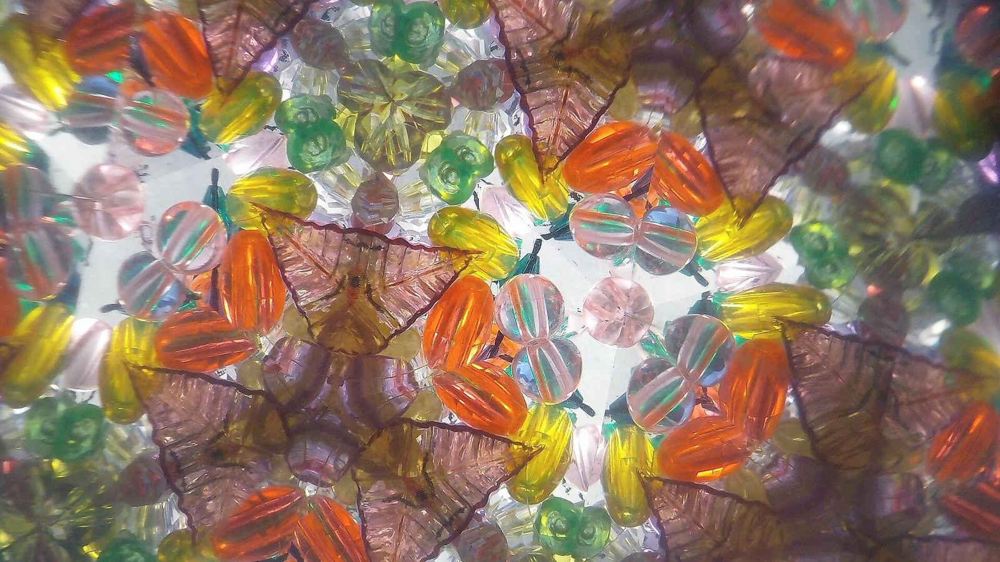
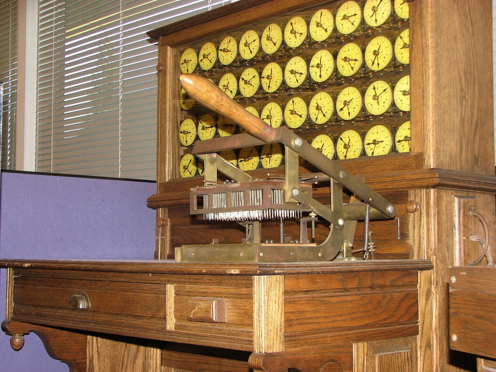
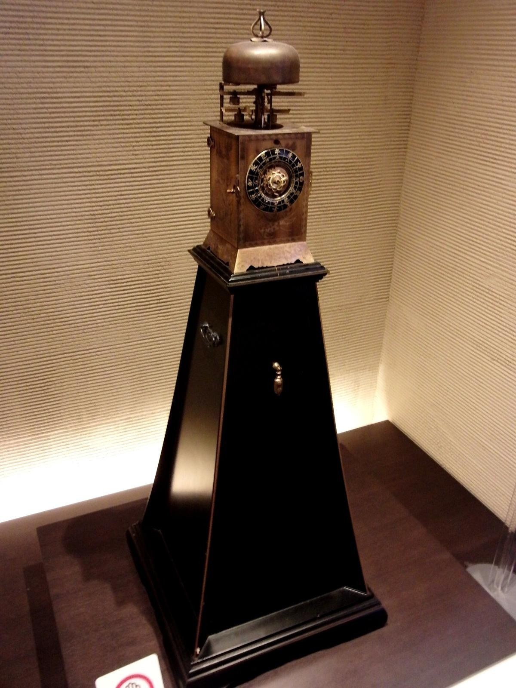
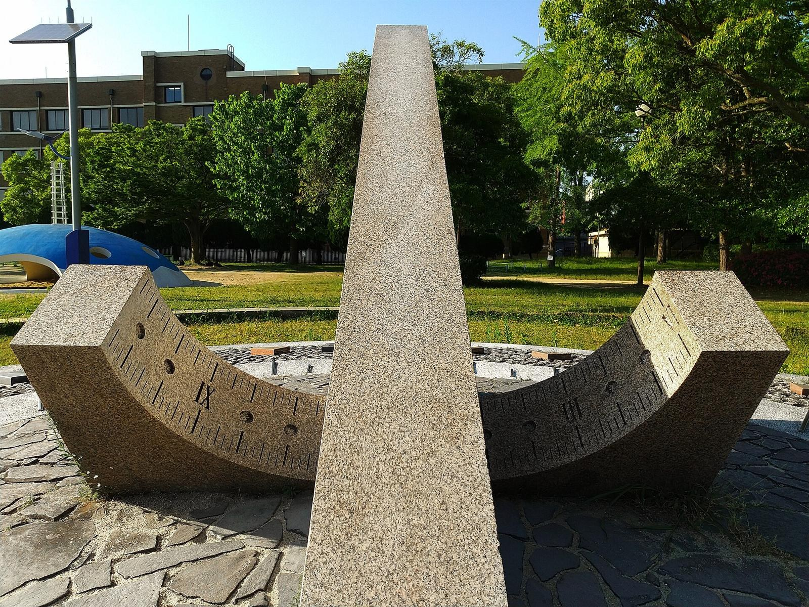
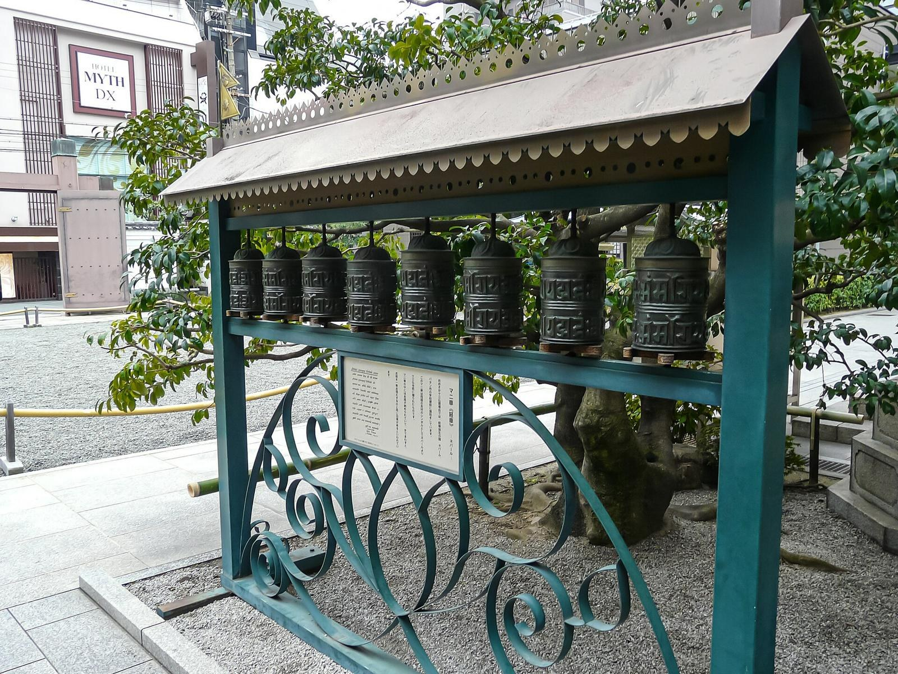
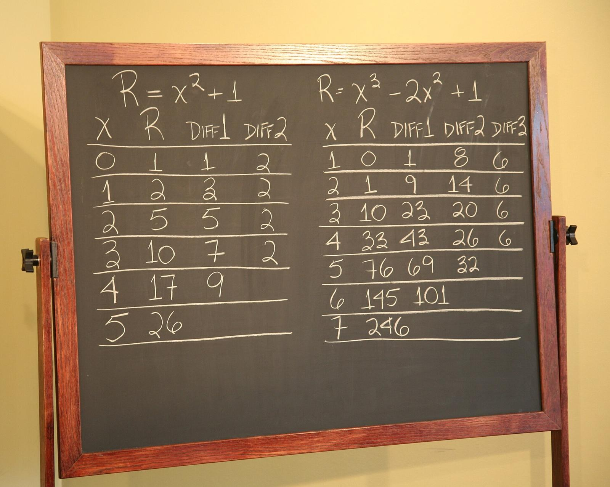
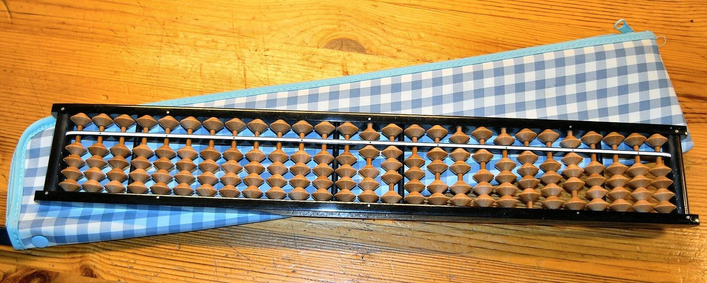

第16回
鏡は、色ガラスの像を、回転と鏡映で並べ直す。
Albarubescens（2019年、万華鏡の像）／CC BY-SA 4.0／Wikimedia Commons（横長に切り出した）
第2部「線形代数」の2回目。行列を「数の表」としてではなく、ベクトルを入れるとベクトルが出てくる機械（線形写像）として読み直す。行列とベクトルの積 $A\boldsymbol x$ の意味、行列の積 $AB$ が写像の合成であること、単位行列 $I$ と逆行列 $A^{-1}$、そして成分で書いた積 $\sum_kA_{ik}B_{kj}$ が、なぜあの形をしているのかを、1行ずつ導く。
第5回では、$(AB)_{ij}=\sum_kA_{ik}B_{kj}$ を定義として与えた。この回は、その定義がなぜその形でなければならないかの答えである。計算そのもの（掛け算の手順）は第5回で一度やっているので、ここでは「意味」に集中する。高校数学の行列（1次変換）を習った人には復習が多いが、仮定せず一度は書く（覚えている人は飛ばしてよい）。
基底・一次独立・次元は第15回で説明する。この回で必要なのは、「平面のベクトルは $\boldsymbol e_1,\boldsymbol e_2$ の定数倍の和で一通りに書ける」という一点だけで、それは 1.3 で具体的に確かめる。
記号が出るたびに、緑色の枠（記号）で「①読み方 ②日本語での意味 ③省略していない書き方 ④どこで出会うか」を書く。全部の記号は 記号索引 からも探せる。
| 記号 | 読み方 | ざっくりした意味 | 説明 |
|---|---|---|---|
| $A\boldsymbol x$ | エー・エックス | 行列 $A$ を縦ベクトル $\boldsymbol x$ に掛けたもの | →1.2 |
| $f_A$ | エフ・エー | 行列 $A$ が決める写像 $\boldsymbol x\mapsto A\boldsymbol x$ | →1.4 |
| 線形写像 | せんけいしゃぞう | 和と定数倍を保つ写像 | →2.1 |
| $R(\theta)$ | アール・シータ | 原点まわりの角 $\theta$ の回転を表す行列 | →3.2 |
| $AB$（積＝合成） | エー・ビー | 「$B$ をしてから $A$ をする」写像の行列 | →4.2 |
| $\mathrm{id}$ | アイディー | 何もしない写像（恒等写像） | →5.1 |
| $I$（単位行列の働き） | アイ | $I\boldsymbol x=\boldsymbol x$ となる行列 | →5.1 |
| $A^{-1}$、正則（可逆） | エー・インバース | $A$ を元に戻す行列、それがある行列 | →5.2 |
| $A^k$ | エー・の・ケー乗 | $A$ を $k$ 回続けて掛ける | →5.5 |
省略の段階：行列を写像として書く（$f_A(\boldsymbol x)$ → $A\boldsymbol x$、$f_A\circ f_B$ → $AB$）。
| 記号 | 意味 | 説明のある場所 |
|---|---|---|
| $\boldsymbol x$、$x_i$ | 縦ベクトルとその成分 | 第5回 1.2、3.1 |
| $A$、$A_{ij}$ | 行列と、その $i$ 行 $j$ 列の成分 | 第5回 4.2、4.3 |
| $m\times n$ 行列 | $m$ 行 $n$ 列 | 第5回 4.2 |
| $I$、$\delta_{ij}$ | 単位行列、クロネッカーのデルタ | 第5回 4.5、第4回 |
| $\boldsymbol a^{\mathsf T}$ | 転置 | 第5回 5.2 |
| 行列の積の成分表示 | $(AB)_{ij}=\sum_kA_{ik}B_{kj}$ | 第5回 8.2 |
| 列ベクトルを横に並べる書き方 | $A=[\boldsymbol a_1\ \boldsymbol a_2\ \cdots]$ | 第5回 4.4 |
| $\boldsymbol e_i$、基底 | 第 $i$ 成分だけ 1 のベクトル | 第15回で説明する |
| $\sum$、ダミー添字、二重和 | 和の記号とその添字 | 第4回 2.1、2.3、3 |
| $f:A\to B$、$x\mapsto$、$f(x)$ | 写像、対応のさせ方、値 | 第3回 1.2、1.3、1.4 |
| $f\circ g$（合成）、$f^{-1}$（逆写像） | 続けて行う、元に戻す | 第3回 2.1、2.3 |
| $\mathbb R^n$、$\forall$、$\Rightarrow$ | $n$ 次元の数ベクトルの集まり、すべての、ならば | 第2回、3.1、2.3 |
| $:=$、省略の段階 | 名前を定める、S0, S1, … | 第1回 2.2、6.1 |
PHOTO 1｜現実

穴の位置を読み取って、多数のダイヤルに数を数え込んでいく、集計機である。
Erik Pitti（2008年、ホレリス式の集計機）／CC BY 2.0／Wikimedia Commons（縮小した）
MITATE 1｜見立て

歯車を回して、時を刻む和時計である。
Momotarou2012（2012年、和時計）／CC BY-SA 3.0／Wikimedia Commons（縮小した）
第5回では、行列を「数を $m$ 行 $n$ 列に並べた表」として導入し、連立方程式 $A\boldsymbol x=\boldsymbol b$ を一行で書く道具として使った。しかし、表のままでは、次の問いに答えられない。
これらは、行列をベクトルに作用する機械と見ると、すべて自然に答えが出る。機械として見るために、まず積 $A\boldsymbol x$ を読み直す。
①読み方：「エー・エックス」。「$A$ に $\boldsymbol x$ を掛ける」「$A$ を $\boldsymbol x$ に作用させる」とも言う。
②日本語での意味：$m$ 行 $n$ 列の行列 $A$ と、成分が $n$ 個の縦ベクトル $\boldsymbol x$ から、成分が $m$ 個の縦ベクトルを1つ作る操作。その $i$ 番目の成分は、$A$ の $i$ 行目と $\boldsymbol x$ の内積である。
③省略していない書き方：$\displaystyle (A\boldsymbol x)_i:=\sum_{k=1}^{n}A_{ik}\,x_k\quad(i=1,2,\ldots,m)$。これは第5回 8.4(a)と同じ式である（$\boldsymbol x$ を $n\times1$ 行列と見た積）。
④使われる場所：連立方程式 $A\boldsymbol x=\boldsymbol b$（第17回）、固有値 $A\boldsymbol v=\lambda\boldsymbol v$（第20回）、最小二乗法 $A\boldsymbol x\approx\boldsymbol b$（第21回）、制御の状態方程式、機械力学の運動方程式 $M\ddot{\boldsymbol x}+K\boldsymbol x=\boldsymbol 0$ など。
最小の具体例：$A=\begin{pmatrix}2&1\\0&3\end{pmatrix}$（$2\times2$）、$\boldsymbol x=\begin{pmatrix}2\\1\end{pmatrix}$。成分を1つずつ求める。
$$ \begin{aligned} (A\boldsymbol x)_1 &= A_{11}x_1+A_{12}x_2 = 2\cdot2+1\cdot1 = 5 && \text{（1行目と }\boldsymbol x\text{ の内積）}\\ (A\boldsymbol x)_2 &= A_{21}x_1+A_{22}x_2 = 0\cdot2+3\cdot1 = 3 && \text{（2行目と }\boldsymbol x\text{ の内積）} \end{aligned} $$
よって $A\boldsymbol x=\begin{pmatrix}5\\3\end{pmatrix}$。入力 $\begin{pmatrix}2\\1\end{pmatrix}$ を入れると、出力 $\begin{pmatrix}5\\3\end{pmatrix}$ が出てくる。図1.1 を見る。
同じ $A\boldsymbol x$ を、行ごとでなく列ごとに読むことができる。$A$ の第 $j$ 列を $\boldsymbol a_j$ と書く（第5回 4.4 の書き方：$A=[\boldsymbol a_1\ \boldsymbol a_2]$）。上の $A$ では $\boldsymbol a_1=\begin{pmatrix}2\\0\end{pmatrix}$、$\boldsymbol a_2=\begin{pmatrix}1\\3\end{pmatrix}$。
$$ A\boldsymbol x = x_1\boldsymbol a_1+x_2\boldsymbol a_2 = 2\begin{pmatrix}2\\0\end{pmatrix}+1\begin{pmatrix}1\\3\end{pmatrix}=\begin{pmatrix}4\\0\end{pmatrix}+\begin{pmatrix}1\\3\end{pmatrix}=\begin{pmatrix}5\\3\end{pmatrix} $$
先ほどの $(5,3)^{\mathsf T}$ と一致した。偶然ではない。一般の場合を、1行に1操作で確かめる。$\boldsymbol a_j$ の第 $i$ 成分は $(\boldsymbol a_j)_i=A_{ij}$（$j$ 列目の $i$ 番目という意味）である。
$$ \begin{aligned} (A\boldsymbol x)_i &= \sum_{j=1}^{n}A_{ij}\,x_j && \text{（} A\boldsymbol x\text{ の定義。添字の名前 }k\text{ を }j\text{ に取り替えた。ダミー添字なので結果は同じ）}\\ &= \sum_{j=1}^{n}x_j\,(\boldsymbol a_j)_i && \text{（} A_{ij}=(\boldsymbol a_j)_i\text{ と、実数の積は順序によらない）}\\ &= \Bigl(\sum_{j=1}^{n}x_j\,\boldsymbol a_j\Bigr)_i && \text{（ベクトルの和と定数倍は成分ごと）} \end{aligned} $$
すべての $i$ で成分が等しいので、$A\boldsymbol x=\sum_jx_j\boldsymbol a_j$。
特に、$\boldsymbol x=\boldsymbol e_1=(1,0)^{\mathsf T}$（第15回で説明する標準基底）なら $A\boldsymbol e_1=1\cdot\boldsymbol a_1+0\cdot\boldsymbol a_2=\boldsymbol a_1$、$\boldsymbol x=\boldsymbol e_2=(0,1)^{\mathsf T}$ なら $A\boldsymbol e_2=\boldsymbol a_2$。つまり、
図1.2 を見る。
この「列の見方」は、第17回の「$A\boldsymbol x=\boldsymbol b$ が解をもつ条件は $\boldsymbol b$ が $A$ の列の線形結合であること」の土台になる（第15回の線形結合）。
行列 $A$（$m\times n$）を1つ決めると、「$\mathbb R^n$ のベクトルを入れると $\mathbb R^m$ のベクトルが出る」対応が1つ決まる。第3回の写像として書くために、名前をつける。
①読み方：「エフ・エー」。
②日本語での意味：行列 $A$ を「入れたベクトルに $A$ を掛けて返す機械」と見たときの、その機械の名前。
③省略していない書き方：$f_A:\mathbb R^n\to\mathbb R^m,\quad f_A(\boldsymbol x):=A\boldsymbol x$（つまり $\boldsymbol x\mapsto A\boldsymbol x$、第3回の $\mapsto$）。$A$ が $m\times n$ のとき、入力は $\mathbb R^n$ のベクトル（列の数 $n$ が入力の次元）、出力は $\mathbb R^m$ のベクトル（行の数 $m$ が出力の次元）。
④使われる場所：この回のあらゆる場所。本では $T_A$、$L_A$、$\mathcal A$ などとも書く（同じ意味）。
| 段階 | 書き方 | 何を省いたか | 省いても困らない理由 |
|---|---|---|---|
| S0 | $f_A:\mathbb R^n\to\mathbb R^m$ を、$\forall\,\boldsymbol x\in\mathbb R^n$ について $\bigl(f_A(\boldsymbol x)\bigr)_i=\sum_{k=1}^{n}A_{ik}x_k$ で定める | （省略なし） | ― |
| S1 | $f_A(\boldsymbol x)=A\boldsymbol x$ | 成分の式を、積の記号 $A\boldsymbol x$（1.2）に畳む | $A\boldsymbol x$ の定義が S0 の右辺だと決めてある |
| S2 | $A\boldsymbol x$ | 写像の名前 $f_A$ を省き、行列そのものを機械と見なす | $A$ が決まれば $f_A$ が決まる。「$A$ を $\boldsymbol x$ に作用させる」と読む |
| S3 | $f_A\circ f_B$ → $AB$ | 合成の記号 $\circ$ と $f$ を省く（4.2 で導く） | $f_A\circ f_B=f_{AB}$ が成り立つ（4.2）ので、行列どうしの並びが合成を指す |
以後 $A\boldsymbol x$ と書いたら、この表の S2。迷ったら S0 に戻る。
写像には、たくさんの種類がある（$x\mapsto x^2$、$x\mapsto\sin x$ など）。行列が決める写像 $f_A$ は、その中でもごく素直な部類に入る。素直さの中身は、2つの性質である。これを調べるために、まず1次元（実数から実数）の最も簡単な場合から始める。
最小の具体例：$1\times1$ 行列 $A=(3)$ は、$f_A(x)=3x$ という写像を決める。この写像は、
グラフは原点を通る直線になる（図2.1）。$x\mapsto3x+1$ のグラフは直線だが原点を通らず、$3(x+y)+1\neq(3x+1)+(3y+1)$ で、この性質をもたない。「直線のグラフ」と「この2つの性質」は同じではないことに、注意しておく（2.4 で再び出てくる）。
①読み方：「せんけいしゃぞう」。英語は linear map（または linear transformation）。「$f$ は線形である」とも言う。
②日本語での意味：入力のベクトルを足してから写しても、写してから足しても同じになり、入力を定数倍してから写しても、写してから定数倍しても同じになる写像。
③省略していない書き方：写像 $f:\mathbb R^n\to\mathbb R^m$ が線形であるとは、次の2つが成り立つこと。
$$ \text{(L1)}\quad \forall\,\boldsymbol x,\boldsymbol y\in\mathbb R^n:\ f(\boldsymbol x+\boldsymbol y)=f(\boldsymbol x)+f(\boldsymbol y) $$
$$ \text{(L2)}\quad \forall\,\boldsymbol x\in\mathbb R^n,\ \forall\,c\in\mathbb R:\ f(c\boldsymbol x)=c\,f(\boldsymbol x) $$
（(L1) は「加法性」、(L2) は「斉次性（せいじせい）」と呼ばれる。$\forall$ は「すべての」。）(L1) の左辺の $+$ は $\mathbb R^n$ の和、右辺の $+$ は $\mathbb R^m$ の和で、別の和であることに注意する。
④使われる場所：行列、微分 $f\mapsto f'$（第7回の規則：和と定数倍の微分）、積分、フーリエ変換、ラプラス変換、演算子（量子力学・制御工学）。「線形」と名のつくものはすべてこの2つの性質で定義される。
(L1)(L2) から、すぐに次が出る。
$$ \begin{aligned} f(\boldsymbol 0) &= f(0\cdot\boldsymbol x) && \text{（任意の }\boldsymbol x\text{ について }0\cdot\boldsymbol x=\boldsymbol 0\text{）}\\ &= 0\cdot f(\boldsymbol x) && \text{（(L2) で }c=0\text{）}\\ &= \boldsymbol 0 && \text{（0 に何を掛けても零ベクトル）} \end{aligned} $$
つまり線形写像は原点を原点に写す。2.1 で $3x+1$ が線形でなかったのは、原点 $0$ が $1$ に動くからである。また、(L1)(L2) を1つにまとめた形
$$ f(c\boldsymbol x+d\boldsymbol y)=c\,f(\boldsymbol x)+d\,f(\boldsymbol y)\qquad(\forall\,c,d\in\mathbb R,\ \forall\,\boldsymbol x,\boldsymbol y) $$
もよく使う（第15回の線形結合を保つ、という言い方）。
$f_A(\boldsymbol x)=A\boldsymbol x$ が (L1)(L2) を満たすことを、成分で確かめる。$A$ は $m\times n$、$\boldsymbol x,\boldsymbol y\in\mathbb R^n$。
(L1)：
$$ \begin{aligned} \bigl(A(\boldsymbol x+\boldsymbol y)\bigr)_i &= \sum_{k=1}^{n}A_{ik}\,(x_k+y_k) && \text{（} A\boldsymbol x\text{ の定義。ベクトルの和は成分ごと）}\\ &= \sum_{k=1}^{n}\bigl(A_{ik}x_k+A_{ik}y_k\bigr) && \text{（実数の分配法則）}\\ &= \sum_{k=1}^{n}A_{ik}x_k+\sum_{k=1}^{n}A_{ik}y_k && \text{（有限個の和は項ごとに分けられる）}\\ &= (A\boldsymbol x)_i+(A\boldsymbol y)_i && \text{（} A\boldsymbol x,\ A\boldsymbol y\text{ の定義）} \end{aligned} $$
(L2)：
$$ \begin{aligned} \bigl(A(c\boldsymbol x)\bigr)_i &= \sum_{k=1}^{n}A_{ik}\,(c\,x_k) && \text{（定数倍は成分ごと）}\\ &= c\sum_{k=1}^{n}A_{ik}x_k && \text{（共通の因数 }c\text{ を和の外へ出す）}\\ &= c\,(A\boldsymbol x)_i && \text{（定義）} \end{aligned} $$
数値で確かめる。上の $A=\begin{pmatrix}2&1\\0&3\end{pmatrix}$、$\boldsymbol x=\begin{pmatrix}2\\1\end{pmatrix}$、$\boldsymbol y=\begin{pmatrix}-1\\1\end{pmatrix}$。$A\boldsymbol x=(5,3)^{\mathsf T}$。$A\boldsymbol y=(2\cdot(-1)+1\cdot1,\ 0\cdot(-1)+3\cdot1)^{\mathsf T}=(-1,3)^{\mathsf T}$。和は $A\boldsymbol x+A\boldsymbol y=(4,6)^{\mathsf T}$。一方、$\boldsymbol x+\boldsymbol y=(1,2)^{\mathsf T}$ で $A(\boldsymbol x+\boldsymbol y)=(2\cdot1+1\cdot2,\ 0\cdot1+3\cdot2)^{\mathsf T}=(4,6)^{\mathsf T}$。一致する（図2.2）。
(a) 平行移動 $g(x,y):=(x+1,\ y+1)$：格子の直線は直線のままだが、$g(0,0)=(1,1)\neq(0,0)$ なので線形でない。(L1) も壊れる：$g(\boldsymbol x+\boldsymbol y)=\boldsymbol x+\boldsymbol y+(1,1)$ だが $g(\boldsymbol x)+g(\boldsymbol y)=\boldsymbol x+\boldsymbol y+(2,2)$。
(b) $h(x,y):=(x,\ y+x^2/2)$：原点は動かないが、$h(2\boldsymbol e_1)=(2,2)$ で $2h(\boldsymbol e_1)=2\,(1,\tfrac12)=(2,1)$。(L2) が壊れる。格子の水平線が放物線に曲がる。
$f(x)=ax+b$ を高校では「1次関数」と呼ぶが、線形写像の意味では $b=0$ のときだけ線形である。$b\neq0$ のものは「アフィン写像」と呼ぶ（6.2で再び触れる）。
図2.3 を見る。
2.3 は「行列 ⇒ 線形」を示した。逆「線形 ⇒ 行列」も成り立つ。これが、行列が線形代数の中心にある理由である。
主張：$f:\mathbb R^n\to\mathbb R^m$ が線形なら、ある $m\times n$ 行列 $A$ があって、すべての $\boldsymbol x$ について $f(\boldsymbol x)=A\boldsymbol x$。しかも $A$ の第 $j$ 列は $f(\boldsymbol e_j)$ である。
導出（$\boldsymbol x=(x_1,\ldots,x_n)^{\mathsf T}$ は $\boldsymbol e_j$ で $\boldsymbol x=\sum_jx_j\boldsymbol e_j$ と書ける。たとえば $n=2$ で $(3,5)^{\mathsf T}=3\boldsymbol e_1+5\boldsymbol e_2$。第15回の基底）：
$$ \begin{aligned} f(\boldsymbol x) &= f\Bigl(\sum_{j=1}^{n}x_j\boldsymbol e_j\Bigr) && \text{（} \boldsymbol x=\sum_jx_j\boldsymbol e_j\text{）}\\ &= \sum_{j=1}^{n}f(x_j\boldsymbol e_j) && \text{（(L1) を繰り返し使う）}\\ &= \sum_{j=1}^{n}x_j\,f(\boldsymbol e_j) && \text{（(L2)）} \end{aligned} $$
そこで、列が $f(\boldsymbol e_j)$ である行列 $A:=[\,f(\boldsymbol e_1)\ \cdots\ f(\boldsymbol e_n)\,]$ をつくる。1.3 の「列の定数倍の和」の式より、この $A$ について $A\boldsymbol x=\sum_jx_jf(\boldsymbol e_j)$。右辺は上の最後の行と同じだから、$f(\boldsymbol x)=A\boldsymbol x$。
$2\times2$ では、$f(\boldsymbol e_1)=(a,c)^{\mathsf T}$、$f(\boldsymbol e_2)=(b,d)^{\mathsf T}$ なら $A=\begin{pmatrix}a&b\\c&d\end{pmatrix}$。図2.4 のように、単位正方形の2辺 $\boldsymbol e_1,\boldsymbol e_2$ の行き先を見れば、行列が読める。
PHOTO 2｜現実

立てた柱の影が、地面の目盛りの上に落ちる、日時計である。
Hirho（2026年、福岡・大濠公園の日時計）／CC BY 4.0／Wikimedia Commons（縮小した）
MITATE 2｜見立て

手で押すと、軸のまわりを一周して、元に戻る経車である。
Naokijp（2019年、大雄寺のマニ車）／CC BY-SA 4.0／Wikimedia Commons（縮小した）
2.5 の読み方（列＝ $\boldsymbol e_1,\boldsymbol e_2$ の行き先）を使うと、$2\times2$ 行列を見るだけで、平面がどう動くかが分かる。以下では、図形の向きが分かるように、アルファベットの「F」を平面に置き、その像を描く。灰色の破線が元の F、色つきが像である。
原点まわりに角 $\theta$（反時計回りを正、$\theta$ はギリシャ文字）だけ回す写像は、図形を図形に写し、平行四辺形を平行四辺形に写す。したがって和を保ち（和は平行四辺形の対角線）、定数倍も保つ（回してから伸ばしても、伸ばしてから回しても同じ）ので、線形と認める。2.5 より、$\boldsymbol e_1,\boldsymbol e_2$ の行き先を求めれば行列が決まる。
①読み方：「アール・シータ」「回転行列」。
②日本語での意味：平面のベクトルを、原点まわりに反時計回りに $\theta$ ラジアンだけ回す写像の行列。
③省略していない書き方：
$$ R(\theta):=\begin{pmatrix}\cos\theta&-\sin\theta\\ \sin\theta&\cos\theta\end{pmatrix}\quad\Bigl(\text{第1列}=f(\boldsymbol e_1),\ \text{第2列}=f(\boldsymbol e_2)\Bigr) $$
④使われる場所：座標変換（極座標、座標軸の回転）、ロボットの関節の姿勢、剛体の運動、振動の主軸変換、直交行列（第19回）。$\theta$ を $\varphi$、$\alpha$ と書く本もある（同じ意味）。右下の文字 $R$ は「rotation」の頭文字。
確かめ（数値）：$\theta=30^\circ=\pi/6$。$\cos30^\circ=\frac{\sqrt3}{2}=0.8660$、$\sin30^\circ=\frac12$。$R(30^\circ)=\begin{pmatrix}0.8660&-0.5\\0.5&0.8660\end{pmatrix}$。点 $(1,0)$ は $(0.8660,\ 0.5)$ に、点 $(0,1)$ は $(-0.5,\ 0.8660)$ に動く。図3.1。
確かめ（特別な場合）：$\theta=0$ なら $R(0)=\begin{pmatrix}1&0\\0&1\end{pmatrix}$（何もしない）。$\theta=90^\circ$ なら $R(90^\circ)=\begin{pmatrix}0&-1\\1&0\end{pmatrix}$ で、$(1,0)\mapsto(0,1)$、$(0,1)\mapsto(-1,0)$。長さも保つ：$(\cos\theta)^2+(\sin\theta)^2=1$。
回転と同じやり方で、$\boldsymbol e_1,\boldsymbol e_2$ の行き先を決めれば、行列が得られる。表にまとめる。
| 名前 | $f(\boldsymbol e_1)$ | $f(\boldsymbol e_2)$ | 行列 | はたらき |
|---|---|---|---|---|
| 拡大・縮小 | $(2,0)^{\mathsf T}$ | $(0,\tfrac12)^{\mathsf T}$ | $\begin{pmatrix}2&0\\0&\tfrac12\end{pmatrix}$ | $x$ 方向に2倍、$y$ 方向に1/2倍 |
| 鏡映（$y=x$ について） | $(0,1)^{\mathsf T}$ | $(1,0)^{\mathsf T}$ | $\begin{pmatrix}0&1\\1&0\end{pmatrix}$ | $x$ と $y$ を入れ替える |
| 射影（$x$ 軸へ） | $(1,0)^{\mathsf T}$ | $(0,0)^{\mathsf T}$ | $\begin{pmatrix}1&0\\0&0\end{pmatrix}$ | $y$ 成分を消す（真下に落とす） |
| せん断 | $(1,0)^{\mathsf T}$ | $(1,1)^{\mathsf T}$ | $\begin{pmatrix}1&1\\0&1\end{pmatrix}$ | 高さ $y$ に比例して右へずらす |
それぞれの図を見る。
図3.2（拡大・縮小）を見る。
鏡映の行列で $(x,y)^{\mathsf T}$ に掛けると $\begin{pmatrix}0&1\\1&0\end{pmatrix}\begin{pmatrix}x\\y\end{pmatrix}=\begin{pmatrix}0\cdot x+1\cdot y\\1\cdot x+0\cdot y\end{pmatrix}=\begin{pmatrix}y\\x\end{pmatrix}$ で、確かに入れ替わる。
図3.3（鏡映）を見る。
射影は $\begin{pmatrix}1&0\\0&0\end{pmatrix}\begin{pmatrix}x\\y\end{pmatrix}=\begin{pmatrix}x\\0\end{pmatrix}$。平面全体が1本の直線（$x$ 軸）に潰れる。2つの違う点 $(2,1)$ と $(2,5)$ が同じ点 $(2,0)$ に落ちる。この「潰れる」写像は、5.3 で元に戻せないことの例になる。
図3.4（射影）を見る。
せん断は $\begin{pmatrix}1&1\\0&1\end{pmatrix}\begin{pmatrix}x\\y\end{pmatrix}=\begin{pmatrix}x+y\\y\end{pmatrix}$。$y$ が大きい点ほど右にずれる。
図3.5（せん断）を見る。
第5回の8.2では、積 $AB$ の定義が突然与えられた。「なぜ同じ位置の成分どうしを掛けない（$A_{ij}B_{ij}$ としない）のか」という疑問は自然である。答えは、$AB$ を「$B$ という機械に通してから $A$ という機械に通す」機械にしたいからである。
$B$ は $n\times p$ 行列（$\mathbb R^p\to\mathbb R^n$）、$A$ は $m\times n$ 行列（$\mathbb R^n\to\mathbb R^m$）とする。$\boldsymbol x\in\mathbb R^p$ を $B$ に通すと $B\boldsymbol x\in\mathbb R^n$ が出て、それを $A$ に通すと $A(B\boldsymbol x)\in\mathbb R^m$。つまり、合成写像 $f_A\circ f_B$（第3回の合成）を考えている。
まず、この合成が線形であることを確かめる。
$$ \begin{aligned} (f_A\circ f_B)(\boldsymbol x+\boldsymbol y) &= f_A\bigl(f_B(\boldsymbol x+\boldsymbol y)\bigr) && \text{（合成の定義）}\\ &= f_A\bigl(f_B(\boldsymbol x)+f_B(\boldsymbol y)\bigr) && \text{（} f_B\text{ は線形：(L1)）}\\ &= f_A\bigl(f_B(\boldsymbol x)\bigr)+f_A\bigl(f_B(\boldsymbol y)\bigr) && \text{（} f_A\text{ は線形：(L1)）}\\ &= (f_A\circ f_B)(\boldsymbol x)+(f_A\circ f_B)(\boldsymbol y) && \text{（合成の定義）} \end{aligned} $$
(L2) も同じ形で確かめられる（演習 問9）。2.5 より、合成写像はある行列で書ける。その行列の成分を、$A(B\boldsymbol x)$ の第 $i$ 成分から求める。$\boldsymbol x\in\mathbb R^p$、$B$ は $n\times p$、$A$ は $m\times n$。
$$ \begin{aligned} \bigl(A(B\boldsymbol x)\bigr)_i &= \sum_{k=1}^{n}A_{ik}\,(B\boldsymbol x)_k && \text{（外側の積 }A\boldsymbol z\text{ の定義。} \boldsymbol z:=B\boldsymbol x\text{）}\\ &= \sum_{k=1}^{n}A_{ik}\Bigl(\sum_{j=1}^{p}B_{kj}\,x_j\Bigr) && \text{（} (B\boldsymbol x)_k\text{ の定義）}\\ &= \sum_{k=1}^{n}\sum_{j=1}^{p}A_{ik}B_{kj}\,x_j && \text{（} A_{ik}\text{ を内側の和の中へ入れる。分配法則）}\\ &= \sum_{j=1}^{p}\sum_{k=1}^{n}A_{ik}B_{kj}\,x_j && \text{（有限個の二重和は和の順序を入れ替えてよい）}\\ &= \sum_{j=1}^{p}\Bigl(\sum_{k=1}^{n}A_{ik}B_{kj}\Bigr)x_j && \text{（} x_j\text{ は }k\text{ に依らないので外へ）} \end{aligned} $$
最後の行で、括弧の中が「$AB$ の $(i,j)$ 成分」と呼びたいものである。それを $(AB)_{ij}$ と名づけると、$\bigl(A(B\boldsymbol x)\bigr)_i=\sum_j(AB)_{ij}x_j=\bigl((AB)\boldsymbol x\bigr)_i$。
①読み方：「エー・ビー」。「$A$ 掛ける $B$」。
②日本語での意味：「$B$ を先にして、$A$ を後にする」写像を1つの行列にしたもの。右の行列が先に作用する。
③省略していない書き方：$A$ が $m\times n$、$B$ が $n\times p$ のとき、$AB$ は $m\times p$ 行列で、
$$ (AB)_{ij}:=\sum_{k=1}^{n}A_{ik}B_{kj},\qquad A(B\boldsymbol x)=(AB)\boldsymbol x\ \ (\forall\,\boldsymbol x\in\mathbb R^p),\qquad f_A\circ f_B=f_{AB} $$
この式は第5回の省略の段階：行列の積を成分に戻すの S1 と同じで、定義（成分の式）のほうが先に与えられていた。この回で、その式は「合成を成分で書いたもの」だと分かった。
④使われる場所：座標変換の連続適用、ロボットの関節ごとの変換の積、遷移行列のべき、状態方程式、ニューラルネットワークの層（「重み行列を掛ける」）。
確かめ（数値）：$A=\begin{pmatrix}2&1\\0&3\end{pmatrix}$、$B=\begin{pmatrix}1&1\\0&1\end{pmatrix}$（せん断）、$\boldsymbol x=(2,1)^{\mathsf T}$。
$$ B\boldsymbol x=\begin{pmatrix}1\cdot2+1\cdot1\\0\cdot2+1\cdot1\end{pmatrix}=\begin{pmatrix}3\\1\end{pmatrix},\qquad A(B\boldsymbol x)=\begin{pmatrix}2\cdot3+1\cdot1\\0\cdot3+3\cdot1\end{pmatrix}=\begin{pmatrix}7\\3\end{pmatrix} $$
一方、第5回の定義で $AB$ を計算する：$(AB)_{11}=2\cdot1+1\cdot0=2$、$(AB)_{12}=2\cdot1+1\cdot1=3$、$(AB)_{21}=0\cdot1+3\cdot0=0$、$(AB)_{22}=0\cdot1+3\cdot1=3$。$AB=\begin{pmatrix}2&3\\0&3\end{pmatrix}$。これを $\boldsymbol x$ に掛けると $(2\cdot2+3\cdot1,\ 0\cdot2+3\cdot1)^{\mathsf T}=(7,3)^{\mathsf T}$。一致した（図4.1）。
$(AB)_{ij}=\sum_kA_{ik}B_{kj}$ の右辺は、$B$ の第 $j$ 列 $\boldsymbol b_j$（成分 $(\boldsymbol b_j)_k=B_{kj}$）と $A$ の積の第 $i$ 成分 $\sum_kA_{ik}(\boldsymbol b_j)_k=(A\boldsymbol b_j)_i$ に等しい。したがって、
$$ AB=[\,A\boldsymbol b_1\ \ A\boldsymbol b_2\ \cdots\ A\boldsymbol b_p\,] $$
2.5 の読み方と合わせると、$AB$ の第 $j$ 列は、「$B$ して、それから $A$ する」で $\boldsymbol e_j$ が行き着く先である。上の例では $\boldsymbol b_1=(1,0)^{\mathsf T}$、$\boldsymbol b_2=(1,1)^{\mathsf T}$。$A\boldsymbol b_1=(2\cdot1+1\cdot0,\ 0\cdot1+3\cdot0)^{\mathsf T}=(2,0)^{\mathsf T}$、$A\boldsymbol b_2=(2\cdot1+1\cdot1,\ 0\cdot1+3\cdot1)^{\mathsf T}=(3,3)^{\mathsf T}$。並べると $\begin{pmatrix}2&3\\0&3\end{pmatrix}$ で、上の $AB$ と一致する。
$R(\theta)R(\varphi)$（$\varphi$ はギリシャ文字ファイ）は、「$\varphi$ 回転してから $\theta$ 回転する」写像。合わせて $\theta+\varphi$ 回転のはずである。成分で確かめる（三角関数の加法定理を使う）。
$$ \begin{aligned} R(\theta)R(\varphi) &= \begin{pmatrix}\cos\theta&-\sin\theta\\ \sin\theta&\cos\theta\end{pmatrix}\begin{pmatrix}\cos\varphi&-\sin\varphi\\ \sin\varphi&\cos\varphi\end{pmatrix}\\ &= \begin{pmatrix}\cos\theta\cos\varphi-\sin\theta\sin\varphi & -\cos\theta\sin\varphi-\sin\theta\cos\varphi\\ \sin\theta\cos\varphi+\cos\theta\sin\varphi & -\sin\theta\sin\varphi+\cos\theta\cos\varphi\end{pmatrix} && \text{（積の定義：行と列の内積）}\\ &= \begin{pmatrix}\cos(\theta+\varphi)&-\sin(\theta+\varphi)\\ \sin(\theta+\varphi)&\cos(\theta+\varphi)\end{pmatrix} && \text{（加法定理）}\\ &= R(\theta+\varphi) \end{aligned} $$
数値例：$\varphi=60^\circ$、$\theta=30^\circ$。$R(30^\circ)R(60^\circ)=\begin{pmatrix}\frac{\sqrt3}{2}&-\frac12\\ \frac12&\frac{\sqrt3}{2}\end{pmatrix}\begin{pmatrix}\frac12&-\frac{\sqrt3}{2}\\ \frac{\sqrt3}{2}&\frac12\end{pmatrix}$。(1,1) 成分は $\frac{\sqrt3}{4}-\frac{\sqrt3}{4}=0$、(1,2) 成分は $-\frac34-\frac14=-1$、(2,1) 成分は $\frac14+\frac34=1$、(2,2) 成分は $-\frac{\sqrt3}{4}+\frac{\sqrt3}{4}=0$。結果は $\begin{pmatrix}0&-1\\1&0\end{pmatrix}=R(90^\circ)$。$30^\circ+60^\circ=90^\circ$ に合う（図4.2）。
合成は、順序を入れ替えると結果が変わる。靴下をはいてから靴をはくのと、靴をはいてから靴下をはくのは別の結果になる。行列でも同じで、$AB$ は「$B$ してから $A$」、$BA$ は「$A$ してから $B$」である。例：せん断 $S=\begin{pmatrix}1&1\\0&1\end{pmatrix}$ と回転 $R=R(90^\circ)=\begin{pmatrix}0&-1\\1&0\end{pmatrix}$。
$$ RS=\begin{pmatrix}0\cdot1+(-1)\cdot0&0\cdot1+(-1)\cdot1\\1\cdot1+0\cdot0&1\cdot1+0\cdot1\end{pmatrix}=\begin{pmatrix}0&-1\\1&1\end{pmatrix}\ \text{（せん断してから回転）} $$
$$ SR=\begin{pmatrix}1\cdot0+1\cdot1&1\cdot(-1)+1\cdot0\\0\cdot0+1\cdot1&0\cdot(-1)+1\cdot0\end{pmatrix}=\begin{pmatrix}1&-1\\1&0\end{pmatrix}\ \text{（回転してからせん断）} $$
$RS\neq SR$。図4.3 で、F の行き先が違うことを確かめる。
この教材（多くの数学・工学の教科書）では、ベクトルは縦、行列は左から掛ける：$A\boldsymbol x$。合成 $AB\boldsymbol x$ は右（$B$）から先に作用する。一方、コンピュータグラフィックスや統計の一部の本は、ベクトルを横に書いて右から行列を掛ける：$\boldsymbol x^{\mathsf T}A$。その流儀では、$\boldsymbol x^{\mathsf T}AB$ は左（$A$）から先に作用する。この2つは転置で結ばれる：$(\boldsymbol x^{\mathsf T}A)^{\mathsf T}=A^{\mathsf T}\boldsymbol x$（第5回 8.3の積の転置）。本を読むときは、まずベクトルが縦か横かを見る。
結合則 $(AB)C=A(BC)$：写像の合成は、括弧のつけ方によらない。任意の $\boldsymbol x$ について、
$$ \begin{aligned} \bigl((AB)C\bigr)\boldsymbol x &= (AB)(C\boldsymbol x) && \text{（積の定義：4.2 の }A(B\boldsymbol x)=(AB)\boldsymbol x\text{ を }AB\text{ と }C\text{ に使った）}\\ &= A\bigl(B(C\boldsymbol x)\bigr) && \text{（同じ式を }A\text{ と }B\text{ に使った）}\\ &= A\bigl((BC)\boldsymbol x\bigr) && \text{（同じ式を }B\text{ と }C\text{ に使った）}\\ &= \bigl(A(BC)\bigr)\boldsymbol x && \text{（積の定義）} \end{aligned} $$
すべての $\boldsymbol x$ で等しいので、$\boldsymbol x=\boldsymbol e_j$ とすれば列ごとに等しく、$(AB)C=A(BC)$。結果、$ABC$ と括弧なしで書いてよい。ただし順序は変えられない。
大きさの条件：$A$（$m\times n$）と $B$（$p\times q$）の積が定義されるのは $n=p$ のとき。$B$ の出力（$\mathbb R^p$ の中）を $A$ の入力（$\mathbb R^n$）に渡すのだから、次元が合わなければならない。結果は $m\times q$。図4.4。
PHOTO 3｜現実
同じ設定で二度通すと、元の文字に戻る、エニグマ暗号機のローターである。
エニグマのローターの積み重ね（作者は Commons に記載なし）／CC BY-SA 3.0／Wikimedia Commons（縮小した）
動機：数の世界では、$1$ は「掛けても何も変わらない数」、$a^{-1}$ は「$a$ を掛けて $1$ にする数」だった。行列の世界でこれに当たるものを、写像として見つける。
①読み方：「アイディー」（identity：同一）、「アイ」。
②日本語での意味：入れたものをそのまま出す（何もしない）写像と、その行列。
③省略していない書き方：$\mathrm{id}:\mathbb R^n\to\mathbb R^n,\ \mathrm{id}(\boldsymbol x):=\boldsymbol x$。2.5 の方法で行列を求めると、$\mathrm{id}(\boldsymbol e_j)=\boldsymbol e_j$ が第 $j$ 列なので、第 $j$ 列が $\boldsymbol e_j$ の行列、つまり第5回 4.5 の単位行列 $I_{ij}=\delta_{ij}$ になる。$I\boldsymbol x=\boldsymbol x$。
④使われる場所：逆行列の定義（5.2）、固有値 $A-\lambda I$（第20回）、正則化 $A^{\mathsf T}A+\lambda I$（第21回）。
数値で確かめる。$I_2\begin{pmatrix}5\\3\end{pmatrix}=\begin{pmatrix}1\cdot5+0\cdot3\\0\cdot5+1\cdot3\end{pmatrix}=\begin{pmatrix}5\\3\end{pmatrix}$。第5回 8.4(c) では $IA=A$ を示した。ここでの意味は、「何もしてから $A$ する」も「$A$ してから何もしない」も、$A$ だけするのと同じ：$IA=AI=A$。
①読み方：「エー・インバース」「エー・マイナス・いち乗」。この行列を持つ $A$ を正則（または可逆）という。
②日本語での意味：$A$ がしたことを元に戻す行列。「$A$ してから $A^{-1}$ する」と何もしないのと同じになる。
③省略していない書き方：$n\times n$ 行列 $A$ に対し、$AA^{-1}=A^{-1}A=I_n$ をみたす $n\times n$ 行列 $A^{-1}$ があるとき、$A$ は正則であり、その $A^{-1}$ を $A$ の逆行列という。写像で書けば $f_{A^{-1}}=(f_A)^{-1}$（第3回の逆写像）。$A^{-1}$ は「$1/A$」と書いてはいけない（行列の割り算は定義していない）。
④使われる場所：連立方程式 $A\boldsymbol x=\boldsymbol b$ の解 $\boldsymbol x=A^{-1}\boldsymbol b$、座標変換の逆、最小二乗法の正規方程式（第21回）、共分散行列の逆（第26回）。
最小の具体例：回転 $R(\theta)$ を元に戻すには、逆向きに $\theta$ 回せばよい。$R(-\theta)R(\theta)=R(-\theta+\theta)=R(0)=I$（4.4 の結果を使った）。よって $R(\theta)^{-1}=R(-\theta)$。$\cos(-\theta)=\cos\theta$、$\sin(-\theta)=-\sin\theta$ より、$R(-\theta)=\begin{pmatrix}\cos\theta&\sin\theta\\-\sin\theta&\cos\theta\end{pmatrix}=R(\theta)^{\mathsf T}$（転置）になる。$R(30^\circ)^{-1}=\begin{pmatrix}0.8660&0.5\\-0.5&0.8660\end{pmatrix}$。
図5.1 を見る。
$A=\begin{pmatrix}a&b\\c&d\end{pmatrix}$ について、$A\boldsymbol x=\boldsymbol y$ を $\boldsymbol x$ について解けば、それが $A^{-1}\boldsymbol y$ である。成分で書くと、
$$ \begin{cases}ax_1+bx_2=y_1&\cdots(\text{i})\\ cx_1+dx_2=y_2&\cdots(\text{ii})\end{cases} $$
$x_2$ を消す。(i) の両辺に $d$、(ii) の両辺に $b$ を掛ける（$x_2$ の係数を $bd$ にそろえる）。
$$ adx_1+bdx_2=dy_1\quad(\text{i}'),\qquad bcx_1+bdx_2=by_2\quad(\text{ii}') $$
(i$'$) から (ii$'$) を引く：$(ad-bc)\,x_1=dy_1-by_2$。
$x_1$ を消す。(i) の両辺に $c$、(ii) の両辺に $a$ を掛ける。
$$ acx_1+bcx_2=cy_1\quad(\text{i}''),\qquad acx_1+adx_2=ay_2\quad(\text{ii}'') $$
(ii$''$) から (i$''$) を引く：$(ad-bc)\,x_2=ay_2-cy_1$。
$ad-bc\neq0$ なら両辺を割れる：$x_1=\dfrac{dy_1-by_2}{ad-bc}$、$x_2=\dfrac{-cy_1+ay_2}{ad-bc}$。行列で書くと、
$$ A^{-1}=\frac{1}{ad-bc}\begin{pmatrix}d&-b\\-c&a\end{pmatrix}\qquad(ad-bc\neq0) $$
確かめ：$A=\begin{pmatrix}2&1\\0&3\end{pmatrix}$ では $ad-bc=2\cdot3-1\cdot0=6$、$A^{-1}=\dfrac16\begin{pmatrix}3&-1\\0&2\end{pmatrix}$。$AA^{-1}=\dfrac16\begin{pmatrix}2\cdot3+1\cdot0&2\cdot(-1)+1\cdot2\\0\cdot3+3\cdot0&0\cdot(-1)+3\cdot2\end{pmatrix}=\dfrac16\begin{pmatrix}6&0\\0&6\end{pmatrix}=I$。さらに、1.2 の出力 $(5,3)^{\mathsf T}$ に $A^{-1}$ を掛けると $\dfrac16(3\cdot5-1\cdot3,\ 0\cdot5+2\cdot3)^{\mathsf T}=\dfrac16(12,6)^{\mathsf T}=(2,1)^{\mathsf T}$。入力 $(2,1)^{\mathsf T}$ に戻った。
なお $ad-bc$ は、図2.4 の平行四辺形の（符号つき）面積である。この量は行列式と呼ばれ、第18回で一般の大きさについて定義する。いまは「割るので、$0$ ではいけない数」とだけ見ておく。
$ad-bc=0$ のとき、上の導出は $0$ で割ることになり、$A^{-1}$ はつくれない。実際、逆行列が存在しない。例 $A=\begin{pmatrix}1&2\\2&4\end{pmatrix}$（$ad-bc=4-4=0$）。
$$ A\begin{pmatrix}2\\0\end{pmatrix}=\begin{pmatrix}1\cdot2+2\cdot0\\2\cdot2+4\cdot0\end{pmatrix}=\begin{pmatrix}2\\4\end{pmatrix},\qquad A\begin{pmatrix}0\\1\end{pmatrix}=\begin{pmatrix}1\cdot0+2\cdot1\\2\cdot0+4\cdot1\end{pmatrix}=\begin{pmatrix}2\\4\end{pmatrix} $$
違う2つの入力が、同じ出力 $(2,4)^{\mathsf T}$ になる。出力から入力を一意に決められないので、「元に戻す写像」は存在しえない。この $A$ は平面全体を直線 $y=2x$ に潰す（図5.2）。3.3 の射影と同じ種類である。どんなときに潰れるかは、第17回の「ランク」と「核」で調べる。
$A,B$ が正則のとき、$AB$ も正則で、$(AB)^{-1}=B^{-1}A^{-1}$。順序が逆になる。確かめは、右辺を $AB$ に掛けて $I$ になることを示す。
$$ \begin{aligned} (AB)(B^{-1}A^{-1}) &= A\bigl(BB^{-1}\bigr)A^{-1} && \text{（結合則：4.6）}\\ &= AIA^{-1} && \text{（} BB^{-1}=I\text{）}\\ &= AA^{-1} && \text{（} AI=A\text{：5.1）}\\ &= I && \text{（} AA^{-1}=I\text{）} \end{aligned} $$
$(B^{-1}A^{-1})(AB)=I$ も、同じ形で確かめられる（演習 問7）。数値で確かめる。$A=\begin{pmatrix}2&1\\0&3\end{pmatrix}$、$B=\begin{pmatrix}1&1\\0&1\end{pmatrix}$。4.2 で $AB=\begin{pmatrix}2&3\\0&3\end{pmatrix}$ だった。$ad-bc=6$ より $(AB)^{-1}=\dfrac16\begin{pmatrix}3&-3\\0&2\end{pmatrix}=\begin{pmatrix}\frac12&-\frac12\\0&\frac13\end{pmatrix}$。一方、$B^{-1}=\begin{pmatrix}1&-1\\0&1\end{pmatrix}$（公式で $ad-bc=1$）、$A^{-1}=\begin{pmatrix}\frac12&-\frac16\\0&\frac13\end{pmatrix}$。$B^{-1}A^{-1}=\begin{pmatrix}1\cdot\frac12+(-1)\cdot0&1\cdot(-\frac16)+(-1)\cdot\frac13\\0&1\cdot\frac13\end{pmatrix}=\begin{pmatrix}\frac12&-\frac12\\0&\frac13\end{pmatrix}$。一致する。
図5.3 を見る。
①読み方：「エー・の・ケー乗」。
②日本語での意味：同じ行列 $A$ を $k$ 回続けて作用させる写像の行列。正方行列だけに使う。
③省略していない書き方：$A^0:=I$、$A^{k}:=\underbrace{AA\cdots A}_{k\text{ 個}}$（$k=1,2,\ldots$）。$A$ が正則なら $A^{-k}:=(A^{-1})^k$。指数法則 $A^{j}A^{k}=A^{j+k}$ が成り立つ（結合則による）。$(AB)^k=A^kB^k$ は一般には成り立たない（$AB\neq BA$ のため）。
④使われる場所：漸化式 $\boldsymbol x_{t+1}=A\boldsymbol x_t$ の解 $\boldsymbol x_t=A^t\boldsymbol x_0$（第20回の対角化で計算が楽になる）、状態遷移、行列指数関数 $e^{At}$（第22回）。
例：$R(30^\circ)^3=R(30^\circ)R(30^\circ)R(30^\circ)=R(90^\circ)$（4.4：回転は角度が足される）。
PHOTO 4｜現実

多項式の値と、その差を、列にして書き足していく黒板である。
Jitze Couperus（2010年、階差機関の展示の黒板）／CC BY 2.0／Wikimedia Commons（縮小した）
MITATE 4｜見立て

珠を動かして、桁ごとに数を足し込んでいく。
Fisle（2013年、そろばん）／CC BY-SA 3.0／Wikimedia Commons（縮小した）
4.2 で導いた式 $(AB)_{ij}=\sum_{k}A_{ik}B_{kj}$ は、第5回で S0 〜 S3 まで省略の段階を示した形と同じである。ここでは、式の各部分が写像のどこに対応しているかを読み解く。
| 式の部分 | 写像での意味 |
|---|---|
| $j$（右の因子 $B$ の列番号） | 入力に使う基底 $\boldsymbol e_j$（$\mathbb R^p$ 側） |
| $k$（$A$ の列番号＝$B$ の行番号。$\sum$ で足されて消える） | 途中の空間 $\mathbb R^n$ の座標軸の番号。$B$ の出力の第 $k$ 成分を $A$ が受け取る |
| $i$（$A$ の行番号） | 最終出力の空間 $\mathbb R^m$ の座標軸の番号 |
| $B_{kj}$ | $\boldsymbol e_j$ を $B$ に通したとき、第 $k$ 成分に出る量 |
| $A_{ik}$ | 途中の第 $k$ 成分が、最終出力の第 $i$ 成分に寄与する割合 |
| $\sum_k$ | 途中の $n$ 本の道（$k=1,\ldots,n$）をすべて通って来た寄与を足し合わせる |
つまり、「$j$ から $i$ へ行く量」は「$j$ から $k$ へ行く量 $B_{kj}$」と「$k$ から $i$ へ行く量 $A_{ik}$」の積を、すべての経由点 $k$ について足したもの。図6.1 を見る。
間違えやすい点：$A_{ij}B_{ij}$（同じ位置の成分どうし）を並べた行列は、「ハダマール積」という別の演算で、この回の積とは別物である。合成の意味をもつのは $\sum_kA_{ik}B_{kj}$ のほうだけである。
和 $A+B$ は、写像の和 $(f_A+f_B)(\boldsymbol x):=A\boldsymbol x+B\boldsymbol x$ の行列で、$(A+B)\boldsymbol x=A\boldsymbol x+B\boldsymbol x$（成分ごとに確かめられる：$\sum_k(A_{ik}+B_{ik})x_k=\sum_kA_{ik}x_k+\sum_kB_{ik}x_k$）。定数倍 $cA$ は $(cA)\boldsymbol x=c(A\boldsymbol x)$。積と和の間には分配法則 $A(B+C)=AB+AC$ が成り立つ。
2.4 で見たアフィン写像 $\boldsymbol x\mapsto A\boldsymbol x+\boldsymbol b$（平行移動を含む）は、線形ではない。それでも、ベクトルを1つ増やして $\begin{pmatrix}\boldsymbol x\\1\end{pmatrix}\mapsto\begin{pmatrix}A&\boldsymbol b\\\boldsymbol 0^{\mathsf T}&1\end{pmatrix}\begin{pmatrix}\boldsymbol x\\1\end{pmatrix}$ と書けば、1つの行列で表せる（同次座標）。ロボット工学やコンピュータグラフィックスでは、平行移動と回転を1つの行列の積にまとめるためによく使う。この本では詳しく扱わない（予告のみ）。
$A=\begin{pmatrix}1&2\\3&4\end{pmatrix}$、$\boldsymbol x=\begin{pmatrix}1\\-1\end{pmatrix}$ について、$A\boldsymbol x$ を (1) 行ごとの内積、(2) 列の定数倍の和、で求めよ。
解答
① (1)：$(A\boldsymbol x)_1=1\cdot1+2\cdot(-1)=-1$、$(A\boldsymbol x)_2=3\cdot1+4\cdot(-1)=-1$。
② (2)：$\boldsymbol a_1=(1,3)^{\mathsf T}$、$\boldsymbol a_2=(2,4)^{\mathsf T}$。$A\boldsymbol x=1\cdot\boldsymbol a_1+(-1)\cdot\boldsymbol a_2=(1,3)^{\mathsf T}-(2,4)^{\mathsf T}=(-1,-1)^{\mathsf T}$。
③ 確かめ：2通りの答えが一致した（1.3）。
次の写像 $\mathbb R^2\to\mathbb R^2$ は線形か。線形なら行列を書け。(a) $f(x,y)=(2x+y,\ x-3y)$ (b) $g(x,y)=(x+1,\ y)$ (c) $h(x,y)=(xy,\ x)$
解答
① (a)：$f(\boldsymbol e_1)=f(1,0)=(2,1)$、$f(\boldsymbol e_2)=f(0,1)=(1,-3)$。行列 $\begin{pmatrix}2&1\\1&-3\end{pmatrix}$ を $(x,y)^{\mathsf T}$ に掛けると $(2x+y,\ x-3y)^{\mathsf T}$ で $f$ と一致する。行列で書けたので線形（2.3）。
② (b)：$g(0,0)=(1,0)\neq(0,0)$。原点を動かすので線形でない（2.2）。
③ (c)：$h(1,1)=(1,1)$。$h\bigl(2(1,1)\bigr)=h(2,2)=(4,2)$ だが $2h(1,1)=(2,2)$。(L2) が壊れるので線形でない。
線形写像 $f:\mathbb R^2\to\mathbb R^2$ が $f(\boldsymbol e_1)=(1,2)^{\mathsf T}$、$f(\boldsymbol e_2)=(-1,3)^{\mathsf T}$ をみたすとき、$f$ の行列 $A$ と $f\bigl((3,2)^{\mathsf T}\bigr)$ を求めよ。
解答
① 2.5 より、列が $f(\boldsymbol e_1),f(\boldsymbol e_2)$ の行列：$A=\begin{pmatrix}1&-1\\2&3\end{pmatrix}$。
② $f(3,2)=3f(\boldsymbol e_1)+2f(\boldsymbol e_2)=3(1,2)^{\mathsf T}+2(-1,3)^{\mathsf T}=(3-2,\ 6+6)^{\mathsf T}=(1,12)^{\mathsf T}$。
③ 確かめ：$A(3,2)^{\mathsf T}=(1\cdot3+(-1)\cdot2,\ 2\cdot3+3\cdot2)^{\mathsf T}=(1,12)^{\mathsf T}$。一致。
$R=R(90^\circ)=\begin{pmatrix}0&-1\\1&0\end{pmatrix}$（$90^\circ$ 回転）、$M=\begin{pmatrix}1&0\\0&-1\end{pmatrix}$（$x$ 軸についての鏡映：$y$ の符号を変える）。(1) 「回転してから鏡映」の行列 $MR$ と、(2) 「鏡映してから回転」の行列 $RM$ を求め、点 $(1,2)$ の行き先を比べよ。
解答
① (1)：$MR=\begin{pmatrix}1\cdot0+0\cdot1&1\cdot(-1)+0\cdot0\\0\cdot0+(-1)\cdot1&0\cdot(-1)+(-1)\cdot0\end{pmatrix}=\begin{pmatrix}0&-1\\-1&0\end{pmatrix}$。
② (2)：$RM=\begin{pmatrix}0\cdot1+(-1)\cdot0&0\cdot0+(-1)\cdot(-1)\\1\cdot1+0\cdot0&1\cdot0+0\cdot(-1)\end{pmatrix}=\begin{pmatrix}0&1\\1&0\end{pmatrix}$。
③ $(1,2)$：$MR(1,2)^{\mathsf T}=(-2,\ -1)^{\mathsf T}$、$RM(1,2)^{\mathsf T}=(2,\ 1)^{\mathsf T}$。
④ 確かめ：手で順に行う。回転 $(1,2)\mapsto(-2,1)$、鏡映して $(-2,-1)$（(1) と一致）。鏡映 $(1,2)\mapsto(1,-2)$、回転して $(2,1)$（(2) と一致）。$MR\neq RM$。
$A=\begin{pmatrix}3&1\\5&2\end{pmatrix}$ の逆行列を求め、$A\boldsymbol x=\begin{pmatrix}1\\2\end{pmatrix}$ を解け。
解答
① $ad-bc=3\cdot2-1\cdot5=1\neq0$。逆行列がある。
② 5.3 の公式：$A^{-1}=\dfrac11\begin{pmatrix}2&-1\\-5&3\end{pmatrix}=\begin{pmatrix}2&-1\\-5&3\end{pmatrix}$。
③ $\boldsymbol x=A^{-1}\begin{pmatrix}1\\2\end{pmatrix}=\begin{pmatrix}2\cdot1+(-1)\cdot2\\-5\cdot1+3\cdot2\end{pmatrix}=\begin{pmatrix}0\\1\end{pmatrix}$。
④ 確かめ：$A(0,1)^{\mathsf T}=(3\cdot0+1\cdot1,\ 5\cdot0+2\cdot1)^{\mathsf T}=(1,2)^{\mathsf T}$。一致。
$(A\boldsymbol x)_1=1\cdot2+0\cdot1=2$、$(A\boldsymbol x)_2=2\cdot2+1\cdot1=5$、$(A\boldsymbol x)_3=0\cdot2+3\cdot1=3$。$A\boldsymbol x=(2,5,3)^{\mathsf T}$。$A$ は $3\times2$ だから、入力は $\mathbb R^2$（列の数）、出力は $\mathbb R^3$（行の数）（1.4）。
$AB$：$A$ の列数 3 と $B$ の行数 3 が一致するので定義できる。大きさは $2\times4$。$BA$：$B$ の列数 4 と $A$ の行数 2 が一致しないので定義できない（4.6）。
(a) 線形（$1\times1$ 行列 $(3)$）。(b) $f(0)=1\neq0$ なので線形でない。(c) 線形。$f(\boldsymbol e_1)=1$、$f(\boldsymbol e_2)=-1$ から $1\times2$ 行列 $(1\ \ -1)$ で書ける（入力 $\mathbb R^2$、出力 $\mathbb R$ なので $1\times2$）。
$\begin{pmatrix}0&-1\\1&0\end{pmatrix}\begin{pmatrix}3\\1\end{pmatrix}=\begin{pmatrix}0\cdot3+(-1)\cdot1\\1\cdot3+0\cdot1\end{pmatrix}=\begin{pmatrix}-1\\3\end{pmatrix}$。確かめ：長さ $\sqrt{9+1}=\sqrt{10}$ と $\sqrt{1+9}=\sqrt{10}$ が等しい（回転は長さを保つ）。
$AB=\begin{pmatrix}1\cdot1+2\cdot3&1\cdot0+2\cdot1\\0\cdot1+1\cdot3&0\cdot0+1\cdot1\end{pmatrix}=\begin{pmatrix}7&2\\3&1\end{pmatrix}$。$BA=\begin{pmatrix}1\cdot1+0\cdot0&1\cdot2+0\cdot1\\3\cdot1+1\cdot0&3\cdot2+1\cdot1\end{pmatrix}=\begin{pmatrix}1&2\\3&7\end{pmatrix}$。$AB\neq BA$（4.5）。
$R(45^\circ)=\begin{pmatrix}\frac{\sqrt2}{2}&-\frac{\sqrt2}{2}\\ \frac{\sqrt2}{2}&\frac{\sqrt2}{2}\end{pmatrix}$。(1,1) 成分：$\frac12-\frac12=0$、(1,2)：$-\frac12-\frac12=-1$、(2,1)：$\frac12+\frac12=1$、(2,2)：$-\frac12+\frac12=0$。結果は $\begin{pmatrix}0&-1\\1&0\end{pmatrix}=R(90^\circ)$。$45^\circ+45^\circ=90^\circ$（4.4）。
(1) $ad-bc=4-3=1$。$A^{-1}=\begin{pmatrix}1&-3\\-1&4\end{pmatrix}$。確かめ：$AA^{-1}=\begin{pmatrix}4-3&-12+12\\1-1&-3+4\end{pmatrix}=I$。
(2) $ad-bc=4-4=0$。逆行列をもたない。実際 $B(2,-1)^{\mathsf T}=(4-4,\ 2-2)^{\mathsf T}=(0,0)^{\mathsf T}=B(0,0)^{\mathsf T}$ で、違う2つの入力が同じ出力になる（5.4）。
(3) $(B^{-1}A^{-1})(AB)=B^{-1}(A^{-1}A)B$（結合則）$=B^{-1}IB=B^{-1}B=I$。
$R(\theta)^{\mathsf T}R(\theta)=\begin{pmatrix}\cos\theta&\sin\theta\\-\sin\theta&\cos\theta\end{pmatrix}\begin{pmatrix}\cos\theta&-\sin\theta\\ \sin\theta&\cos\theta\end{pmatrix}=\begin{pmatrix}\cos^2\theta+\sin^2\theta&-\cos\theta\sin\theta+\sin\theta\cos\theta\\-\sin\theta\cos\theta+\cos\theta\sin\theta&\sin^2\theta+\cos^2\theta\end{pmatrix}=\begin{pmatrix}1&0\\0&1\end{pmatrix}$。$R(\theta)R(\theta)^{\mathsf T}$ も、(1,1) 成分が $\cos^2\theta+\sin^2\theta=1$、(1,2) 成分が $\cos\theta\sin\theta-\sin\theta\cos\theta=0$ のように計算して $I$ になる。よって $R(\theta)^{\mathsf T}$ は $R(\theta)$ の逆行列。
$(f\circ g)(c\boldsymbol x)=f\bigl(g(c\boldsymbol x)\bigr)$（合成の定義）$=f\bigl(c\,g(\boldsymbol x)\bigr)$（$g$ の (L2)）$=c\,f\bigl(g(\boldsymbol x)\bigr)$（$f$ の (L2)）$=c\,(f\circ g)(\boldsymbol x)$（合成の定義）。(L1) は 4.2 で示した。
(1) $P^2$ の (1,1) 成分は $\frac12\cdot\frac12+\frac12\cdot\frac12=\frac12$。ほかの3成分も、同じ計算で $\frac12$。$P^2=P$（落とした点をもう一度落としても動かない、という意味）。
(2) $ad-bc=\frac14-\frac14=0$。または、$P(1,-1)^{\mathsf T}=(0,0)^{\mathsf T}=P(0,0)^{\mathsf T}$ で、違う2つの入力が同じ出力になる。
(1) $F(\theta)^2=\begin{pmatrix}\cos^2\theta+\sin^2\theta&\cos\theta\sin\theta-\sin\theta\cos\theta\\ \sin\theta\cos\theta-\cos\theta\sin\theta&\sin^2\theta+\cos^2\theta\end{pmatrix}=I$。
(2) $F(\theta)F(\varphi)=\begin{pmatrix}\cos\theta\cos\varphi+\sin\theta\sin\varphi&\cos\theta\sin\varphi-\sin\theta\cos\varphi\\ \sin\theta\cos\varphi-\cos\theta\sin\varphi&\sin\theta\sin\varphi+\cos\theta\cos\varphi\end{pmatrix}$。加法定理より (1,1) は $\cos(\theta-\varphi)$、(1,2) は $-\sin(\theta-\varphi)$、(2,1) は $\sin(\theta-\varphi)$、(2,2) は $\cos(\theta-\varphi)$。これは $R(\theta-\varphi)$。

.jpg){kind=link}


.jpg){kind=link}
.JPG){kind=link}